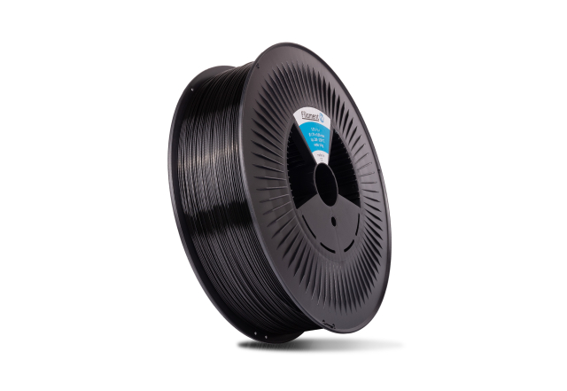

Filament PM PLA (musta)
Takaisin

Filament PM PLA on hyvä perusmuovi kaikenlaiseen tulostamiseen.
Helppotulosteinen muovi, joka on kasvipohjainen.
Suositeltava tulostuslämpötila on 200-220°C ja pedille ~60°C.
Rullassa 1Kg filamenttia.